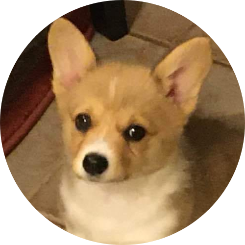

|

|
Enrique Javier Joaquín Hidalgo
I'm a mechatronic engineering student, and also a
music lover.
Im' a 21 years old guy, I love science, maths, and learning anything about engineering (in other words, to learn about the
practical aplications of science, and how to use software and computational tools related to this). I'm trying to be better
each day, and someday I'm sure I'll become the person I want to be. I'm a very loyal friend, and I would describe myself as a
laugh abuser, very reserved about my personal life, and kind of weird in social enviroments, but I really love to hang out with
my friends. I love the music, right now I'm learning and exploring the world of electronic music, specifically learning about
the House movement in the middle 80's. I also play the piano... or at least I'm trying to learn how to play it, I find it quite
funny and relaxing. If I must mention anything else, it would be that I'm a support main in League of Legends, I love catchers,
specially Bard OoO.
|